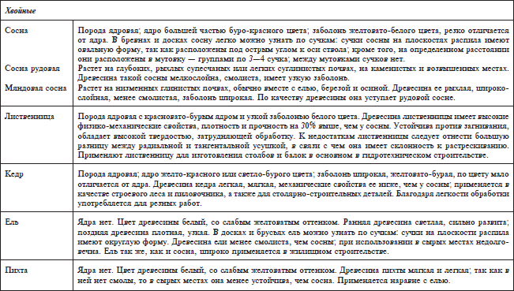
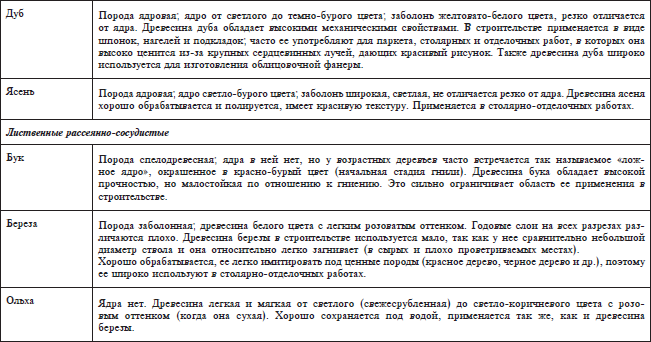

Сушка лесных материалов.


Свежесрубленная древесина имеет влажность значительно большую, чем допускается при ее использовании. При быстром высыхании древесины возможно коробление и растрескивание. Поэтому перед использованием древесины в строительстве ее сушат, что предохраняет от загнивания, увеличивает прочность, уменьшает плотность и склонность к изменению формы и размеров. В настоящее время применяют следующие способы сушки древесины: воздушную (естественную), камерную, электросушку, сушку в горячих жидкостях. Основными являются воздушная и камерная сушки.
Воздушная сушкапроводится на открытом воздухе, под навесом или в закрытых складах. Продолжительность сушки древесины с исходной влажностью 60 % до влажности 20 % в зависимости от времени года – 15–60 суток. Воздушная сушка требует больших площадей, зависит от климатических условий и времени года, не исключает загнивания древесины, а высушивание ее возможно только до воздушно-сухого состояния.


Камерную сушкуосуществляют в специальных камерах-сушилках с помощью нагретого и увлажненного воздуха или топочных газов с температурой 40—105 °C. При камерной сушке соблюдается определенный режим, т. е. соотношение между температурой и влажностью воздуха. Нарушение режима сушки может привести к растрескиванию и короблению древесины, к увеличению брака и удлинению сроков сушки. Искусственная сушка не только сокращает сроки сушки, но позволяет высушивать изделия до влажности ниже 16 %, получать древесину высокого качества, без коробления и трещин. К недостаткам камерной сушки относится необходимость иметь специальное оборудование и помещение, а также значительный расход топлива, электроэнергии и рабочей силы.